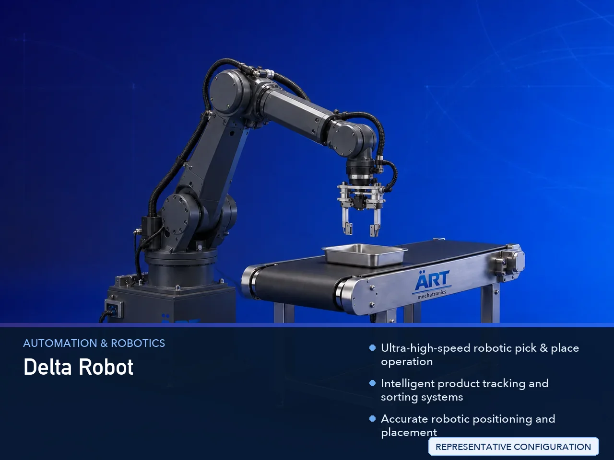

Delta Robot Machine for Packaging (High Speed Pick & Place Packaging Robot)
A Delta Robot Machine for Packaging, also known as a Delta Pick & Place Robot, High-Speed Packaging Robot, Parallel Robot System, or Robotic Packaging Automation Machine, is an advanced industrial automation solution designed for ultra-fast product picking, sorting, collating, positioning,…

About the Delta Robot
Delta robotic packaging systems are widely used for: ✔ High-speed pick & place operations ✔ Product sorting and collating ✔ Tray loading systems ✔ Case packing automation ✔ Conveyor product transfer ✔ Packaging line automation ✔ Food product handling ✔ FMCG packaging operations
The machine improves: ✔ Packaging speed ✔ Product handling precision ✔ Production efficiency ✔ Labor reduction ✔ Packaging consistency ✔ Industrial safety ✔ End-of-line automation performance
Industrial delta robot machines use: ✔ Parallel robotic arm systems ✔ Servo synchronized high-speed motion control ✔ PLC and HMI automation controls ✔ Vacuum grippers and intelligent end effectors ✔ Vision guided tracking systems
to automatically pick and place products with ultra-high speed, superior accuracy, and reliable industrial performance.
Delta robot packaging machines are widely used in industries such as:
Food processing industries Beverage industries Confectionery industries Bakery industries Cosmetic industries Pharmaceutical industries Electronics industries FMCG industries
where ultra-fast automation, precision handling, and high-speed production are essential.
The machine is highly suitable for: ✔ High-speed packaging automation ✔ Snack and confectionery handling ✔ Tray loading operations ✔ Robotic sorting systems ✔ Case packing automation ✔ FMCG packaging lines
ART Mechatronics offers high-performance delta robot machines for packaging, engineered for continuous industrial operation, intelligent robotic handling, ultra-fast product movement, and reliable long-term automation performance.
Working Principle of Delta Robot Machine for Packaging
- 1. Product Infeed & Conveyor Tracking Products are automatically transferred through synchronized conveyor systems and tracked using intelligent sensors and vision systems.
- 2. Product Detection & Positioning Process Machine automatically identifies product position, orientation, speed, and movement before robotic handling operation.
Servo synchronized delta robotic motion ensures ultra-fast and accurate product handling operations.
- 3. Delta Robot Pick & Place Operation Machine handles: ✔ Pouches ✔ Sachets ✔ Bottles ✔ Cartons ✔ Snacks ✔ Bakery products ✔ Pharmaceutical products ✔ FMCG packaged goods
accurately and continuously.
- 4. Intelligent Product Handling Process Machine performs: High-speed product picking Sorting Grouping Tray loading Case packing Transfer operations Conveyor synchronization
for efficient packaging automation and production handling operations.
- 5. Vision & Automation Integration Optional systems include: Vision inspection systems Barcode scanning AI-based product recognition Vacuum gripper systems Reject systems
- 6. Finished Product Discharge Handled products discharged automatically for: Case packing Cartoning Palletizing Warehouse storage Retail distribution
Types of Delta Robot Machines for Packaging
- 1. High-Speed Pick & Place Delta Robot Designed for: ✔ Ultra-fast lightweight product handling applications
- 2. Food Packaging Delta Robot Suitable for: ✔ Snack, bakery, and confectionery packaging systems
- 3. Pharmaceutical Delta Robot System Uses: ✔ Medicine and healthcare packaging automation systems
- 4. Vision Guided Delta Robot Designed for: ✔ AI-based intelligent packaging operations
- 5. Multi Head Delta Robot Packaging System Suitable for: ✔ High-capacity industrial packaging lines
- 6. Fully Automatic Delta Robotic Packaging System Designed for: ✔ Complete industrial packaging automation lines
Industries Using Delta Robot Packaging Systems
🍿 Food & Snack Industry Chips, namkeen, confectionery, bakery products, and snack packaging systems. 🥤 Beverage Industry Bottle handling, tray loading, and beverage packaging automation systems. 🍫 Confectionery Industry Chocolate, candy, biscuits, and confectionery packaging automation systems. 💊 Pharmaceutical Industry Medicine packaging and healthcare product automation systems. 🧴 Cosmetic & Personal Care Industry Cosmetic cartons, sachets, and product packaging systems. 🛒 FMCG Industry Consumer products and retail packaging automation systems.
Features & Advantages
✔ Ultra-high-speed robotic pick & place operation ✔ Intelligent product tracking and sorting systems ✔ Accurate robotic positioning and placement ✔ PLC and servo automation control systems ✔ Improves production efficiency and packaging speed ✔ Reduces labor dependency and manual handling ✔ Supports multiple product formats and packaging types ✔ Reliable long-term industrial performance ✔ Smooth and continuous packaging line integration
Technical Highlights
Machine Type: Delta robot machine for packaging Industrial delta robot system High-speed packaging robot Product Compatibility: Pouches Sachets Bottles Cartons Snacks Bakery products FMCG packaged goods Integration: Vision tracking systems Vacuum grippers Conveyor synchronization systems Robotic automation systems Features: PLC control system Servo synchronization Touchscreen HMI AI-based automation integration High-speed parallel robotic movement Applications: Food products Beverages Confectionery products Cosmetics Pharmaceutical products Industrial packaging operations Automation: Semi-automatic Fully automatic industrial robotic systems
Turnkey Delta Robot Packaging Solutions
ART Mechatronics offers: Complete delta robotic packaging systems Automatic pick & place solutions Industrial automation integration systems Conveyor synchronization systems Installation & commissioning After-sales service & AMC
Why Choose Art Mechatronics
Expertise in industrial packaging and automation systems Customized robotic automation solutions for multiple industries High-performance and intelligent robotic technology Advanced PLC, servo, and AI-based systems Proven industrial packaging performance across sectors
Applications
Food Processing Plants Snack Manufacturing Facilities Beverage Packaging Industries Cosmetic Packaging Units Pharmaceutical Packaging Plants FMCG Packaging Industries
Related Automation & Robotics machines
Get pricing & specs for the Delta Robot
Share the product, target capacity, current process and plant location. These details help our engineers discuss the right machine or line configuration.
One partner, from design to start-up
ART Mechatronics designs, manufactures, installs and commissions your Delta Robot solution with regional presence in India, UAE and Thailand.